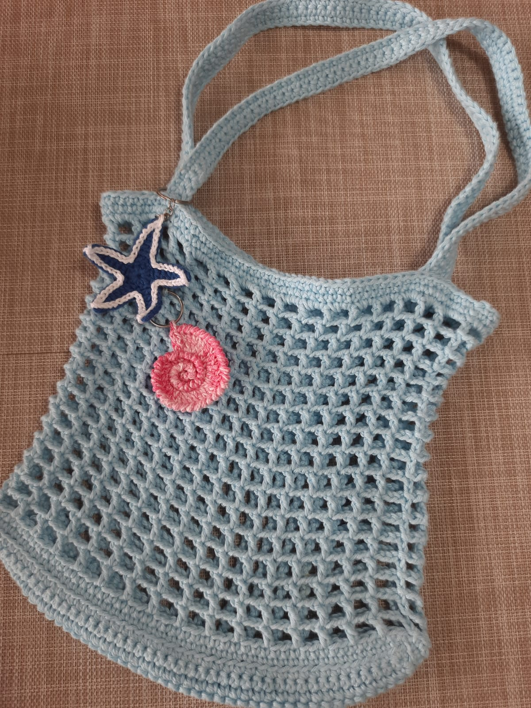
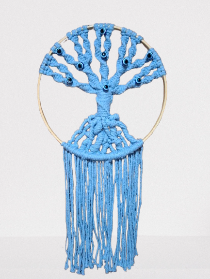
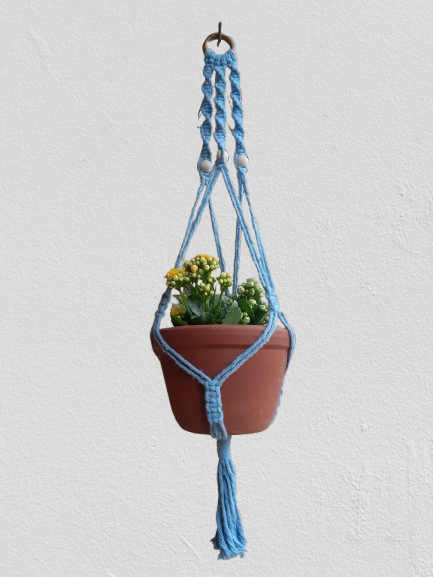

Luma Artesanatos
Homepage
Produtos Crochê
Produtos Macramê
Biografias
Origem dos Artesanatos
Destaques da Loja
Blusa de Alcinha Azul
Ecobag de Praia com chaveiros

Árvores da Vida

Suporte de planta
